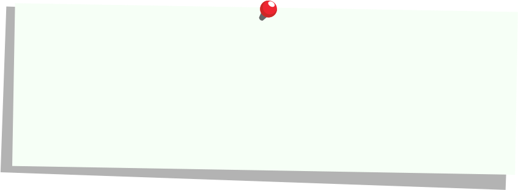

Double Agent Words
b4_wg237_261105_01Some words lead double lives. Read each sentence closely to find out which job the word is doing.
Noun clues
- Names a person, place, animal or thing
- Often comes after a, an, the, my or her
- Often comes after a describing word, like big or blue

Verb clues
- Tells us what someone or something does
- Often comes after to, will, can or might
- Often begins an instruction
How to play
- Read both sentences for the case.
- Tap Noun or Verb beside each sentence. You can change your choice until you tap Check.
- Tap Check to see the correct answers and why they are correct.
- You unmask an agent when you label both sentences correctly.
Noun clues
- Names a person, place, animal or thing
- Often comes after a, an, the, my or her
- Often comes after a describing word, like big or blue
Verb clues
- Tells us what someone or something does
- Often comes after to, will, can or might
- Often begins an instruction